data <- read.csv("file_path")
urls_start <- data[, 1]
urls_full <- paste(urls_start, “&key=”, sep = ““)
urls_full_api_key <- paste(urls_full, api_key, sep = ““)
# creates folder and downloads all images
dir.create(“google_images_folder_name”)
for(i in seq_along(urls_full_api_key)) {
___ file_path <- file.path(“google_images_folder_name”, paste0(“image_name”, data[i,6], “_.png”))
___ download.file(urls_full_api_key[i], file_path, mode = “wb”)
___ print(file_path)
___ print(i)
}AI-Driven Housing Evaluation for Rural Community Development
 2.png)
Introduction
Crucial to Midwestern rural vitality is a supply of good quality housing for residents of all ages and income levels. Crucial to effective rural housing policy development is a supply of good quality data describing local housing conditions.
Ideally, communities would have ready access to information about their local housing stock to identify needs, set priorities, and optimize allocation of resources and investments. Unfortunately, many small communities lack the capacity to systematically evaluate their housing stock.
City and county property assessors’ offices seem a logical source for obtaining local housing data; however, tapping into these assessor databases poses some challenges. Access to a community’s full database may be restricted, as most city and county assessors now outsource data management to private firms. Even when accessible, the database may not be amenable to custom tabulations and targeted queries about specific housing conditions. In addition, the subjectivity of the assessment process introduces biases and inconsistences into the data themselves.
Data science approaches including Artificial Intelligence (AI) models offer great potential for addressing these and other housing data challenges encountered by rural communities and researchers who study them. For example, image classification models could be used to rate the condition of selected exterior housing features, such as roof and siding, or to detect the presence of problems such as missing or damaged gutters or an overgrown landscape. Leveraging AI technology in this manner could streamline the housing evaluation process, eliminate subjective biases, and facilitate informed decision-making for housing investment and development initiatives in rural communities.
Goal and Objectives
The goal of this project is to investigate methods for conducting a thorough and objective evaluation of a community’s housing stock using AI, and also to explore how such methods could be adapted for multi-community analysis of relationships between housing quality and other local attributes in rural areas.
Objectives:
Conduct a literature review to examine examples of AI applications in planning and housing.
Identify study communities and collect data about the communities.
Collect housing data, including images, from existing sources such as realtor websites, Google Street View and county assessor websites.
Collect data on housing age, number of bedrooms, square footage, and assessed value.
Utilize roof, gutter, siding, and landscape condition as part of AI analysis to identify homes that may qualify for community assistance programs.
Assess the results and recommend next steps for Year 2 of the project, considering the insights gained and community input received.
Literature Review
An important objective of the project was its focus on reviewing as much accessible literature and websites. Review of how cities have been using AI to address problems, and specifically housing problems, and how counties or cities assess housing conditions. The section also answers the question, what data might we use to assess housing condition in this project?
- Ames City Housing Inspection
In the context of housing inspections, the City of Ames in Iowa has implemented a comprehensive housing inspection program to ensure housing quality and safety standards are met. The Ames City Housing Inspection program focuses on various aspects of housing conditions, including grass height, weeds, trees, refuse-garbage, sidewalks, deck/porch, gutters, paint, roof, windows, structural foundation, and graffiti (City of Ames, 2021). This program serves as a valuable reference for evaluating and assessing housing quality in the rural context, particularly in the Iowa region. However, despite the efforts made by programs like the Ames City Housing Inspection, the subjective nature of evaluating existing housing conditions and the limited availability of resources for thorough investigations still pose challenges.
- U.S Department of Housing and Urban Development
The U.S. Department of Housing and Urban Development (HUD) plays a vital role in ensuring housing quality standards across the United States. In their assessment of housing quality, HUD examines various aspects of the building exterior, including the condition of the foundation, stairs, rails, porches, roof, gutters, exterior surfaces, and chimney. Additionally, HUD emphasizes the importance of evaluating lead-based paint on exterior surfaces to ensure the safety and well-being of residents. These guidelines provided by HUD serve as a valuable reference for assessing and maintaining housing quality standards, contributing to the overall improvement of housing conditions nationwide.
Read more here.
- Orange County Minimum Housing Code
The Orange County minimum housing code plays a crucial role in ensuring housing standards and safety within the county. As outlined in Section 20-34 of the code, specific requirements include the maintenance of a safe foundation, stairs, walls, roofs, and porches. The code also addresses concerns such as high weeds and dilapidated vehicles, which can impact the overall quality of housing in the area.
Read more here.
- Turning Data into Equity
In Detroit, 150 residents were tasked with surveying vacant land across the city that could be used. According to Data-Smart City Solutions, part of Harvard University, around 40,000 properties were found to be blighted and were subsequently given priority for either demolition or remediation. By involving residents in the surveying process, the city successfully identified a significant number of blighted properties, allowing for informed decision-making on demolition or remediation. Community engagement offers an avenue for prioritization, transparency, and alignment with local needs and aspirations.
- RoadBotics
RoadBotics has developed a technology using artificial intelligence that has the ability to analyze road imagery to then assess issues and produce cost effective solutions. This allows cities to know when and where repairs need to take place, and deal with them while saving money. This type of technology also improves safety within cities as problems will not go unnoticed.
Read more here.
- Mason City Assessment
According to Tara Brueggeman, an Assessor for Mason City, data is primarily sourced from publicly available platforms such as Beacon and the Vanguard assessment data management system. While web scraping is not feasible, city and county assessor offices can generate customized reports using SQL from Vanguard.
During the appraisal process, appraisers rely on blueprints for property details and conduct in-person visits to measure and inspect properties. Interior inspections are now limited due to homeowner preferences, but the condition of the exterior serves as a valuable indicator. To minimize bias, appraisers adhere to guidelines outlined in the Iowa Real Property appraisal manual, avoid assessments during unfavorable personal circumstances, and undergo a review process by another individual before finalizing assessment records. These efforts contribute to the objectivity and accuracy of property assessments in Mason City.
- Des Moines Neighborhood Revitalization Program
The Des Moines Revitalization program is pioneering a groundbreaking approach to assess housing conditions through the utilization of AI. With the aim of revitalizing the city’s housing stock, this innovative program leverages AI technology to objectively evaluate the condition of homes in Des Moines. By analyzing various data points, including structural features, maintenance history, and overall quality, the AI system provides a comprehensive assessment of each property. This data-driven approach allows the program to identify areas in need of improvement, prioritize revitalization efforts, and allocate resources effectively.
Workflow
The image below depicts our project plan, outlining the strategies and actions we undertook to accomplish our objectives. The strategies include image gathering / data collection, creating a database and building AI models.
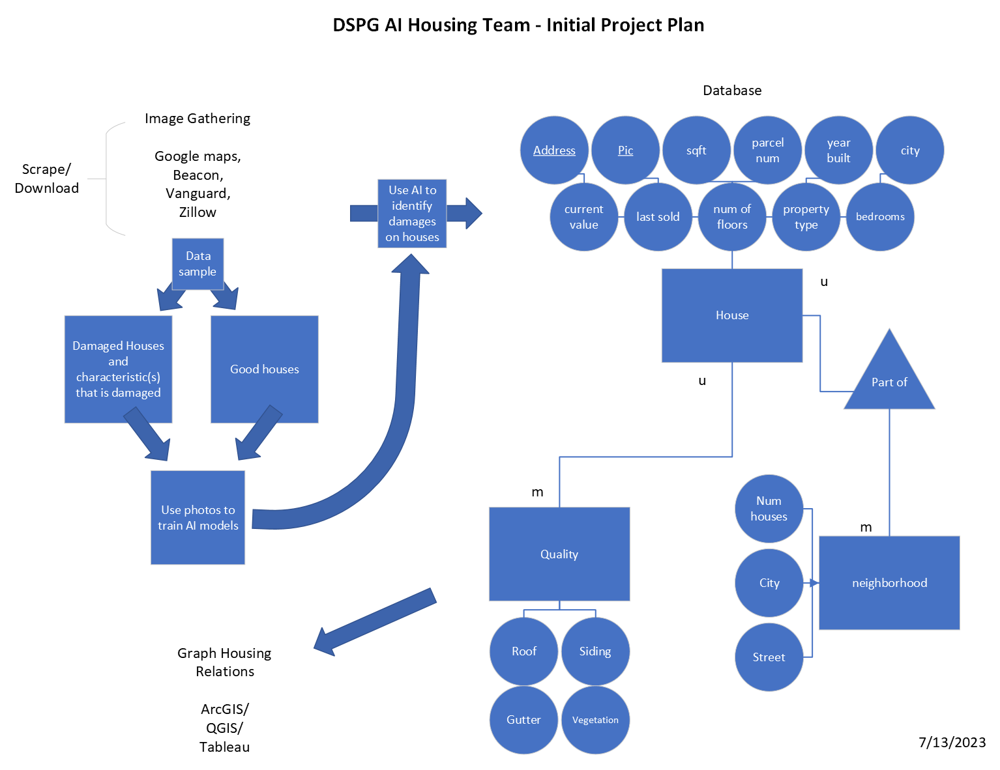
Data Collection
We first gathered house images manually from Kaggle, amassing a total of approximately 35,000 images. Kaggle is a website for hosting and sharing datasets. This website has many useful datasets for building AI models, which is why we decided to use images from Kaggle to aid in the initial AI model building process.
However, since we needed more relevant images specific to Iowa, we decided to web scrape from other sources. Through this technique, we automated the process of acquiring images. Despite this improvement, we still had to manually sift through the gathered images, distinguishing those of high quality and suitable features for training our model from those of poorer quality.
Based on the WINVEST project, the team decided to web scrape housing images and data from the communities of Grundy Center, New Hampton and Independence.
What is Web Scraping?
Web scraping is like a digital tool that automatically collects information from websites, allowing us to gather data quickly without manual searching.
Before starting any web scraping, our team had a plan to scrape the following websites for image, address, and attribute data:
-
Zillow is an online platform and app for real estate that allows users to search for homes, view property listings, and access data on home values and market trends.
-
Trulia is another online platform and app for real estate that helps users find homes, apartments, and other property listings, and provides information on neighborhoods and market trends.
-
Realtor.com is a website and app that offers a comprehensive database of property listings, allowing users to search for homes, apartments, and other real estate options. It also provides resources for finding real estate agents.
County Assessor Websites
These are online portals provided by local government entities that offer property-related information, including property records, tax assessments, and maps. Users can access details about property ownership and tax information.
-
Vanguard Appraisals, Inc is a company that specializes in providing property appraisal services and software solutions for assessment in cities, counties and township Assessment Offices.-
Beacon by Schneider Geospatial
This is a software platform used for property assessment and tax administration. It helps government agencies manage property data, valuation processes, and tax assessments by offering geospatial mapping, data analytics, and reporting capabilities.
-
Google Street View is a feature that provides 360-degree panoramic views of streets and locations worldwide. It allows users to virtually explore places, landmarks, and even remote areas, offering a unique visual experience from the comfort of their screens.
Upon further reflection, we realized that Zillow owns Trulia. The major difference in the two sites is the Zestimate provided on Zillow. Because we were interested in the housing value, we chose to scrape Zillow out of the two.
The following are the sites we did scrape:
- Zillow
- Polk County Assessor Website
- Vanguard
- Beacon
- Google Street View
Address Collection
Vanguard has a GIS tool available that allowed us to select portions of cities and download addresses and parcel numbers. Only data for Independence was available through Vanguard. A downside to this method was that Vanguard limits the number of parcels we can select for download at a time.
Beacon has more protection against web scraping than Vanguard. However, web scraping is necessary for the automation of downloading data on this website, as the GIS tool is not available. To scrape addresses and parcel numbers, and other house information for the remaining cities, we used the Instant Data Scraper Tool. This scraper provided us with CSV files of scraped data from Beacon.
Once the data had been scraped, we found that the CSV files provided us with a format that was not ideal.
Examples of issues we encountered with the CSV files:
Many of the cells contained hidden characters.
New lines within the cells.
To fix this file format, we used Excel’s Text-to-Columns tool to organize text, and Excel functions to separate and combine sections, and the Excel Find and Replace tool to remove unwanted characters.
In addition to re-formatting data, it was also necessary to create links for the Google Street View image collection process. Below is an example of a link to a Google Street View Image (excluding Google API key). To create links, Excel functions were used to concatenate the beginning part of the links (https://maps.googleapis.com/maps/api/streetview?size=800x800&location=), the address (303+I+AVE,+GRUNDY+CENTER+IOWA) and Google API key.
https://maps.googleapis.com/maps/api/streetview?size=800x800&location=303+I+AVE,+GRUNDY+CENTER+IOWA
The addresses in the CSV files were the main source for creating Google API links, our main source for images. If the addresses are incorrect, we wouldn’t be able to pull the images.
Link to more information here.
Image Collection
Out of our five scraping sites, we got images from Zillow and Google Street View. Both sites presented challenges in gathering images. Because of the challenges, we decided to use WINVEST photos as well. In total, the image data came from four sites:
Zillow
Google Street View
WINVEST
Vanguard
Naming Convention
Before we collected images, we created a standardized naming convention to maintain efficient organization. The base of our naming convention is source_city_address. In general, the first letter of the source or city represents it. Independence and New Hampton were adjusted to use the letter “D”and “H,” respectively.
| Source | City |
|---|---|
| Z - Zillow | H - New Hampton |
| G - Google | D - Independence |
| V - Vanguard | G - Grundy Center |
| B - Beacon | S - Slater |
| W - WINVEST |
Here is an example of the naming convention in use:
Source: Zillow
City: New Hampton, Iowa
Address: 311 W Main St
Result: Z_H_311 W MAIN ST_
Web Scraping Zillow
We scraped and downloaded image URLs for For Sale houses and recently Sold houses on Zillow. In total, we could scrape about one hundred images from Zillow. There were many more images available on Zillow that we couldn’t scrape.
Challenges and Limitations of Scraping Zillow
Good images are only available for For Sale and recently Sold houses. Other house images on Zillow are taken from Google.
Images are stored in a carousel. The only image we could scrape was the first, which wasn’t always an image of the exterior.
Lazy loading. The term lazy loading refers to how a webpage loads its data. Because Zillow is lazy, it only loads the image data when the user scrolls down the page. When web scraping, only the loaded images are available. A more complicated process is needed to scrape a lazily loaded webpage.
Zillow is a great source for image data if you can get around the lazy loading issue and grab all images from the carousel. Zillow images for For Sale homes are more recent than other sources.
Scraping Google Street View
A Google API key is required to scrape images from Google Street View. It is included in the image URL to allow viewing of a specific house.
As discussed earlier, the address data scraped from Vanguard and Beacon was cleaned and stored in CSV files to create the image URLs for use with Google Street View. We wrote code to open each image URL in the CSV file and download the image.
Here is an example of the code to download the image from Google Street View.
Click here for more information.
Challenges of Scraping Google Street View
During the process of gathering images from Google Street View, we encountered the following problems:
Image downloading takes time. It takes upwards of an hour for a city of 2,000.
Blurred houses. Certain homeowners request Google to intentionally blur their residences on Google Street View to protect their privacy. Such images were ignored.
Address inconsistencies in Independence that caused errors when scraping. Some houses listed multiple house numbers, such as 100/101, while others had addresses like 100 1/2.
Duplicate images for different addresses.
Particular streets were not mapped, particularly in New Hampton, resulting in no image available.
Images of inside of stores showing as an exterior house image.
.png)
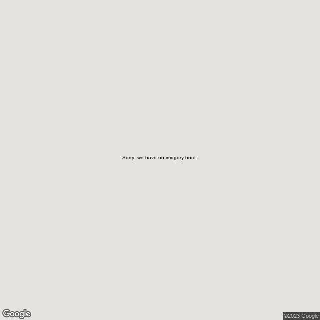
Click here for more information on collecting images from Google Street View.
Attribute Collection
Using a Spider to Collect Vanguard Information
A spider is an automated version of web scraping that automatically goes page by page on a website. A spider reduces manual involvement in the scraping process and makes it more efficient.
Aaron Case, our friend on the AI Grocery Team, built us a spider to scrape Vanguard data. We were able to grab the following information from Vanguard:
Parcel number
Image URL
House style
Year built
Square footage
Appraised value
Click here for more information on how Spider works.
AI Models
This section demonstrates the potential of AI to recognize the quality of house.
Details of the first AI model can be found here.
Building a Binary Image Classification AI Model - Binary Image Classification
Building a Multi-Category Image Classification AI Model - Multi-Category Image Classification
Sorting Images - Image Sorting
Training the Model - Model Training
Utilizing a Trained AI Model - Utilizing AI Model
Exporting Predictions to a CSV on Address - Export Predictions
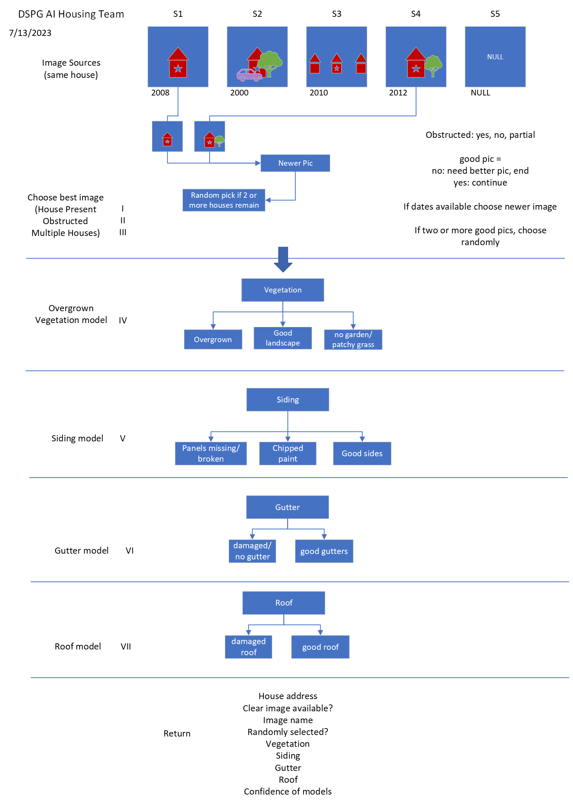
Guide to Housing Project AI Models
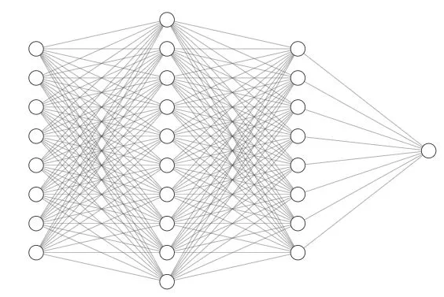
Confidence Level and Accuracy of Models
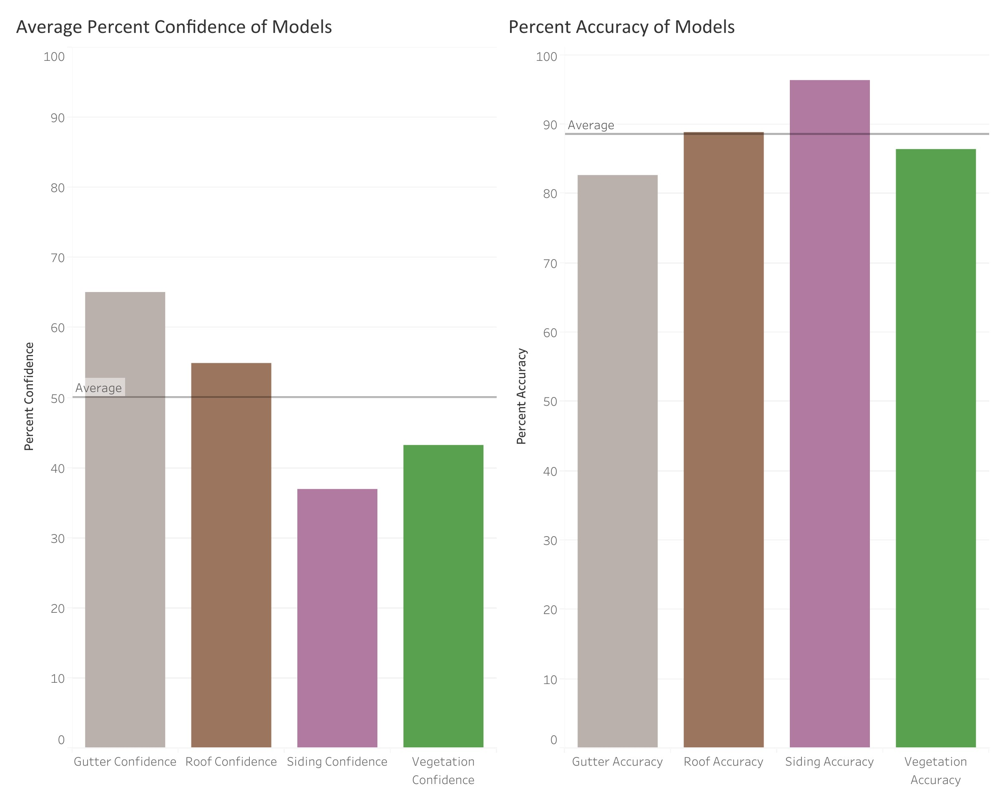
Geographic Visualization
What is GIS and how is it used in this project?
A Geographic Information System (GIS) is a spatial system that is used to analyze, display and store geographically referenced information. GIS uses data that is attached to a unique location and can be useful for identifying problems and trends.
More information here.
Mapping our house quality output using GIS enables us to visualize the AI-model output for vegetation, siding, gutters, and roof characteristics. This will allow us to visualize locations of houses in good conditions versus poor condition.
In the future, it could be beneficial to utilize statistical analysis techniques to understand the spatial relationship between data and visualize clusters.
Geocoding Addresses
To visualize addresses for the communities, first we needed to geocode (provide latitude and longitude for each address). There are many types of software that can be used to geocode addresses.
QGIS is an open-source GIS software. We first geocoded addresses by using the QGIS Plugin called MMQGIS. When using this method, the plugin would crash and fail to geocode all the addresses. Because of this, we geocoded addresses using R instead. Base code was from storybench.
Below is an image of a CSV file with addresses latitude and longitude.
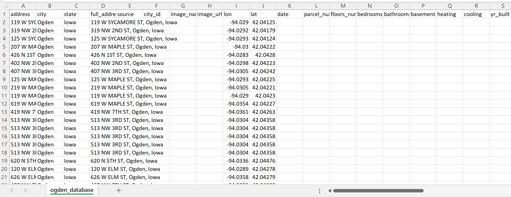
More information here.
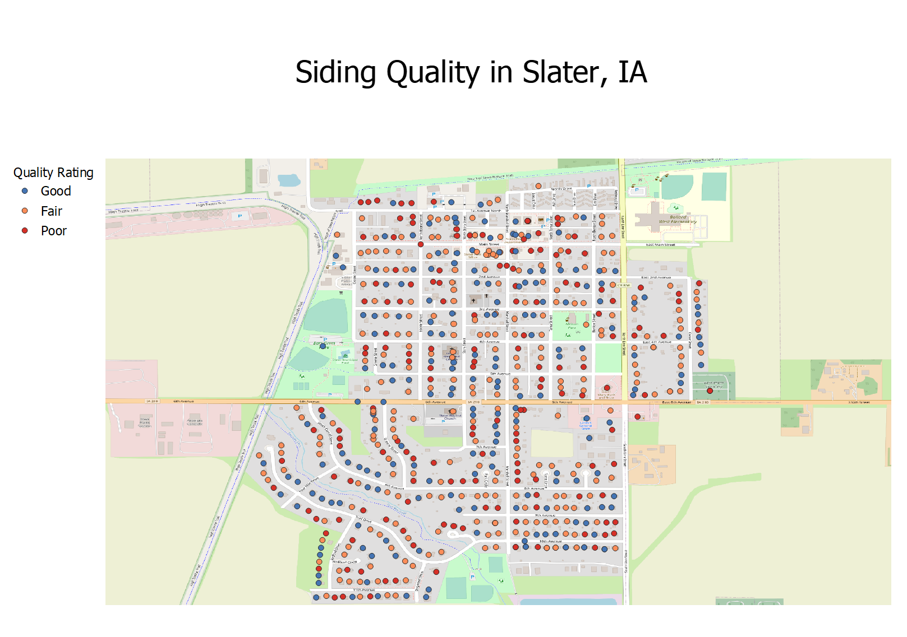
We later realized we can use Tableau for better data connections and visualizations. We created a step by step process for creating a tableau dashboard showing the output from the AI Models and mapping it to the already geocoded addresses.
Click here for more information.
Tableau Dashboard
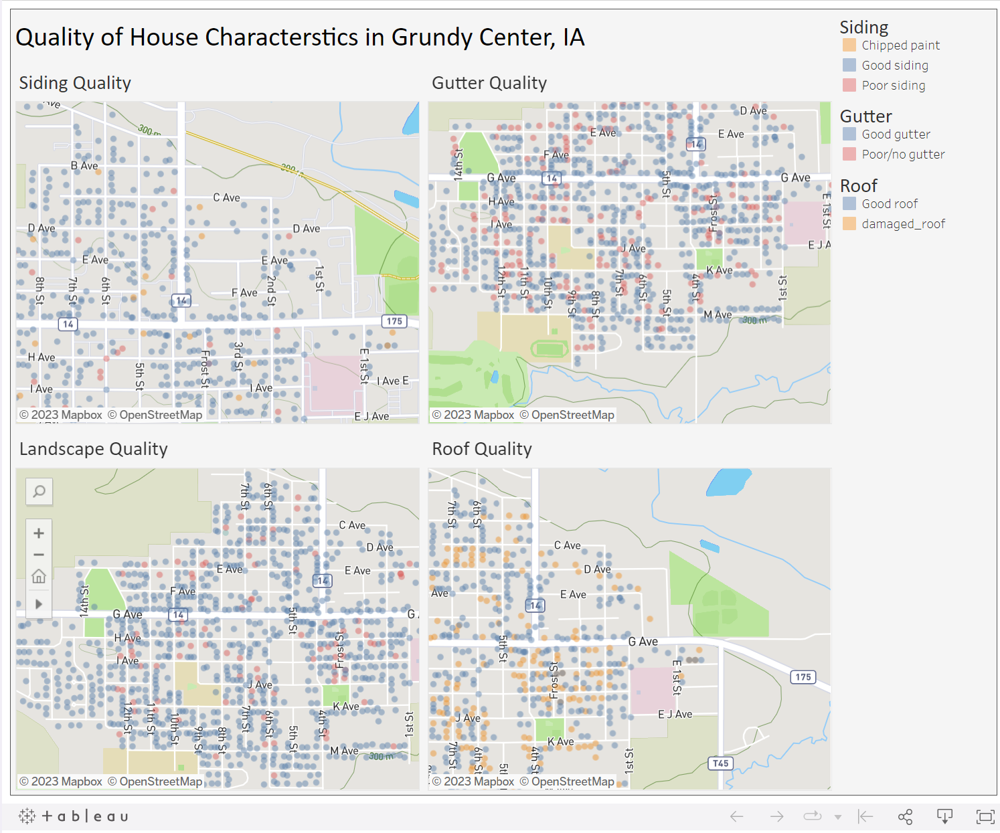
Tableau Dashboard
Demographic Analysis
Identifying housing issues in a rural community requires more than just describing the physical and locational characteristics of its housing stock. A more complete understanding of local housing issues also requires consideration of the community’s residents. After consulting with our clients, we selected a set of demographic and economic measures to characterize the local population in our study communities. These indicators allow communties to put their local housing conditions within a broader context of peer cities.
Profiling Using R Studio
We constructed a demographic profile of the three WINVEST cities - Grundy Center, Independence, and New Hampton - using R Studio. A demographic profile is a type of demographic analysis that focuses on a specific area. They are built using demographic data. Demographic data are but are not limited to, data on age, race, ethnicity, gender, marital status, income, education, and employment.
The following demographic data were used for the demographic profile of the communities:
Population.
Median income
Median home value
Median year home built
Home ownership rates
We chose these demographic data to give a well-rounded analysis of the housing demographics in our chosen communities and add context to the housing conditions we gathered.
Our data came from the United States Decennial Census and the American Community Survey (ACS). The U.S. census is one of the best places to gather demographic data because it counts every resident in the United States. It has a very low inaccuracy, but the U.S. census is only conducted every ten years. The American Community Survey (ACS) is your best bet for more recent data. The ACS has more detailed demographic data and is conducted every five years for the entirety of the United States and every year for places with a population over 65,000. The ACS does not count every individual resident in the United States and instead relies on surveying a proportion of the population to create estimates of the demographics. Thus, it can be inaccurate and provides a margin of error. It is best used for data on the changing population, housing, and workforce.
To collect data in R Studio, we installed the Tidyverse and Tidycensus packages and loaded them with the library() function.
install.packages("tidyverse")
install.packages("tidycensus")library(tidyverse)
library(tidycensus)The Tidyverse package includes a range of functions that make coding in R Studio more user-friendly. It is not necessary for data collection, but it certainly does help. In contrast, the Tidycensus package is essential to data collection. The Tidycensus package lets you pull data directly from the Decennial Census and the ACS using the get_decennial() and get_acs() functions. You only need to specify three arguments to pull data: geography, year, and variable.
get_decennial(geography = "state",
variable = "P001001",
year = 2010)
get_acs(geography = "region",
variable = "B19013_001",
year = 2010)To visualize data in R Studio, we installed and loaded more packages: ggplot2, scales, and ggthemes.
install.packages("ggplot2")
install.packages("scales")
install.packages("ggthemes")library(ggplot2)
library(scales)
library(ggthemes)The ggplot2 package is required to create a plot in R Studio. With ggplot2 you get access to the function ggplot(), which allows you to create visualizations. ggplot() takes the arguments data and mapping to create a plot. Mapping refers to the x and y coordinates of our data. There are various geoms included in the ggplot2 package that aid in creating a visualization. Here are some examples:
| Geom | Result |
|---|---|
| geom_line() | line graph |
| geom_point() | scatter plot |
| geom_histogram() | histogram |
| geom_bar() | bar chart |
| geom_col() | column chart |
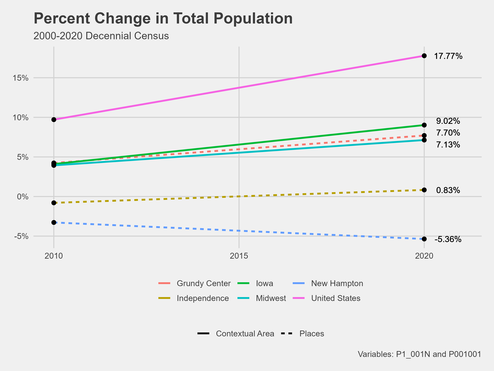
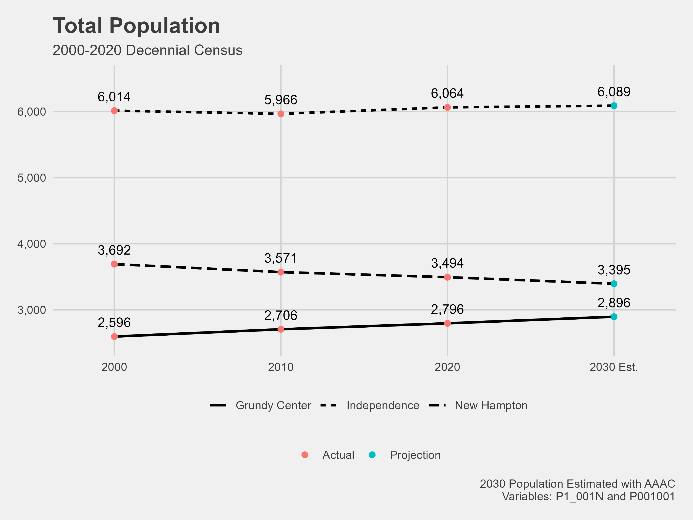
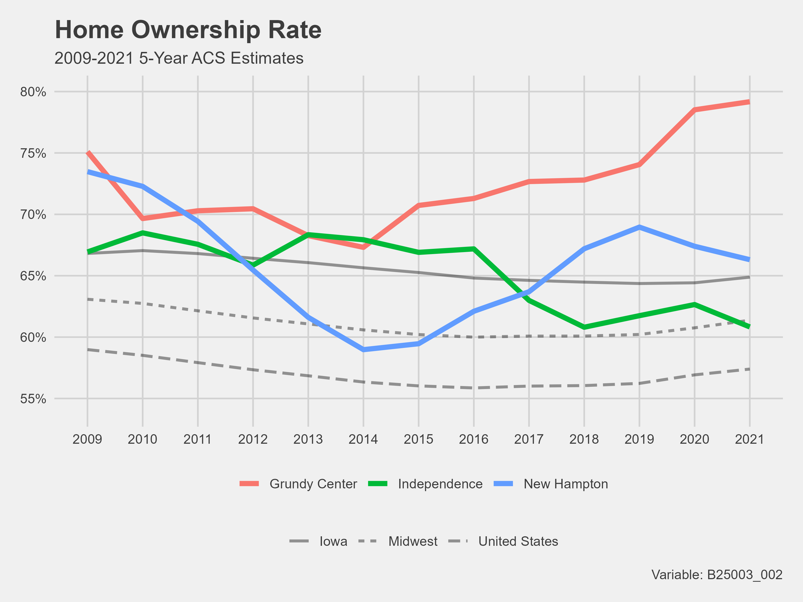
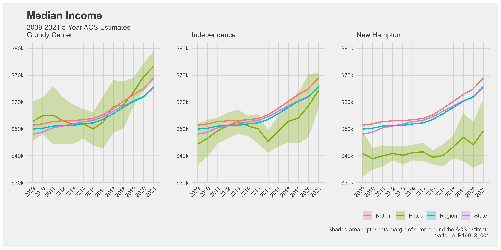
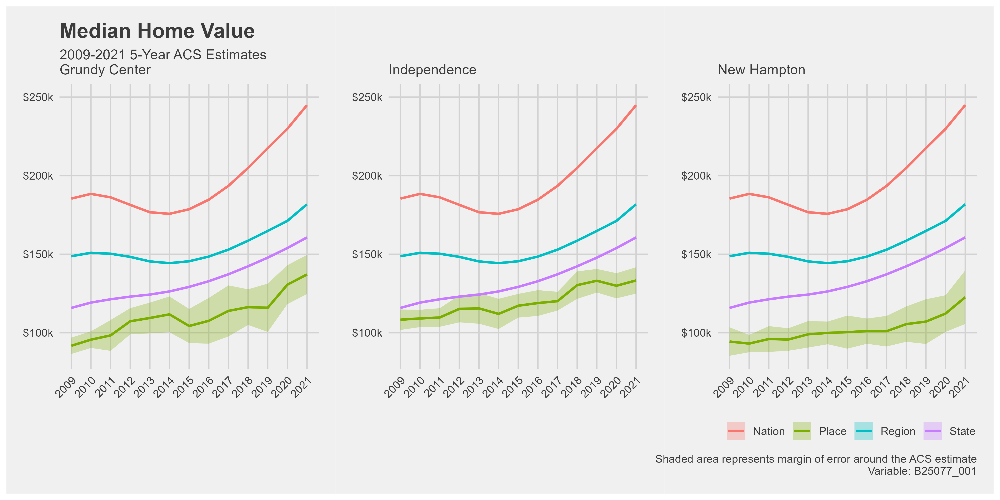
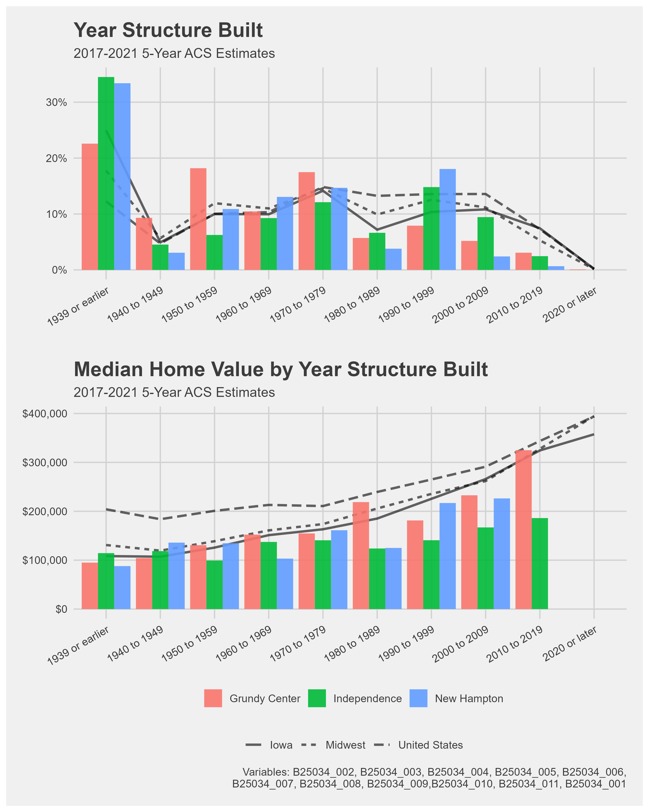
Using the Infographics feature on ArcGIS Pro, we also created community summaries of Grundy Center, Independence, and New Hampton. These visualizations
Grundy Center
.png)
Independence

New Hampton

To make a community summary infographic you can check here for a guide.
Key findings and insights.
Interpretation of demographic patterns and their implications.
Collecting Data to Identify Study Communities
To keep this project moving into other years, we decided to identify study communities in Iowa that could benefit from this project. All data collection was completed in R Studio using the Tidycensus and Tidyverse packages to pull data from the Decennial Census and American Community Survey (ACS).
The following demographic data was collected:
Age
The age of a community’s population can be very telling of its growth. Communities that have a higher percentage of their population over the age of sixty-five than their population under eighteen could have issues with the younger generations moving away. A high median age could indicate the same issue.
Population Size
Specifically, we were looking for communities with a population between 500 and 10,000. Communities with smaller populations are this project’s main focus. We were particularly interested in any communities that had a declining population as that can indicate it is struggling.
Housing
A low median house value and high median house age can indicate a struggling community. A high median house age can reveal that new housing is not being built in the community, and the community is not growing.
Occupancy rates
Communities with low home ownership rates and high vacancy rates could have issues and be struggling. There is little room for community investment if residents cannot afford to buy their own homes.
Income
A low median income or a low percent change in income can indicate a struggling community. There is little room for community investment when residents have little income.
Jobs and employment
Employment statistics are important because there will only be money to invest in a community if people are employed. The percentage of the workforce that commuted to work gives information on where jobs are located. If people are commuting, there are not enough jobs in town. People also tend to move to where jobs are.
We were able to start the visualization process in Tableau for the population data. From this visualization we can pin point the communities in Iowa that have a concerning growth rate and population size.
[insert viz]
Conclusion
In conclusion, this project successfully achieved its objectives. A comprehensive literature review was conducted to explore the implementation of AI in planning and housing, providing valuable examples and insights. Study communities within the targeted population range were identified based on specific criteria, including population stability, the presence of a school, and median age of residents. Housing data, including images, was collected from reliable sources such as Google and county assessor websites.
Furthermore, the project employed AI analysis, particularly siding, vegetation, gutter, and roof detection, to identify homes that could benefit from community assistance programs. The results were assessed and used to refine the selection criteria for Year 2, incorporating the gained insights.
Recommendations
Based on the image sources used in this project, which are Kaggle, Google Street View, Zillow, Vanguard, Beacon, County Assessor Office/websites, the best image source is Google.
In Year 2, utilize county assessor websites as they provide valuable data for assessment purposes and assess to Zillow, Beacon, Vanguard, and so on.
Box is best for storing images while Github is best for storing files. Google Drive will need to separately download images and files to run. Microsoft Teams is good for general quick sharing of information but not a great home for important documents.
Image Classification for Model Training
If Image Classification is … then we recommend … Time consuming Teamwork Subjective Obtain two ratings per photo Has inconsistent ratings across evaluators Obtain two ratings per photo Results influenced by number of ratings categories Make duplicates It takes up space on your local storage Download box on your your local computer Collect more training and test house images.
Build a broken window model to identify broken or boarded up windows and a trash model to identify trash in the yard.
Learning materials on DataCamp
Deep Learning with PyTorch
Introduction to Deep Learning with Keras
Image Processing in Python
Artificial Intelligence (AI) Concepts in Python
Introduction to Web Scraping in R
Understanding machine learning
Introduction to Tableau
Implement F1 Score into the code. It is a popular way to see how well models are performing.
Tools used for geocoding were QGIS and R, use python for geocoding to check if it will be better than the two used in the project.
Add data relating to accessibility to amenities, that could add valuable information to the analysis.
More objectives to be considered for Year 2 of this project;
Could we use AI to determine which communities could benefit most from our project? If we tell it what characteristics of communities make it cause for concern, it could draw the conclusions for us and determine which communities we would want to reach out to.
Create an application that can be used by cities.
Leveraging spatial analysis tools, we can gain valuable insights and broaden the analytical capabilities specifically in relation to identifying communities that might benefit.
Look more into how to use Geospatial Artificial Intelligence (GeoAI).
Create AI model that can identify houses, trees, sidewalks and evaluate roof condition when given an image of a neighborhood.